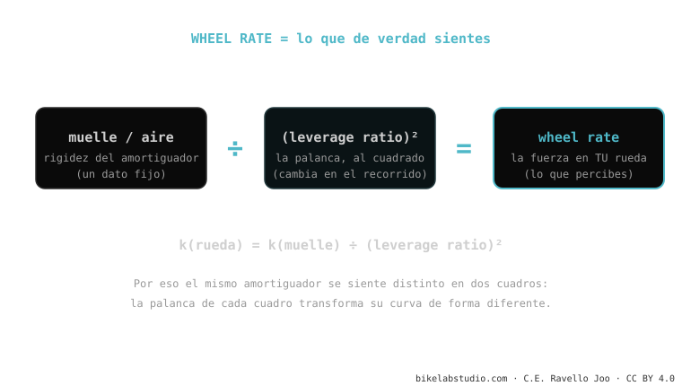

El wheel rate es la fuerza real que sientes en la rueda — no la del amortiguador aislado. Es el muelle (o el aire) del amortiguador transformado por la palanca al cuadrado: k(rueda) = k(muelle) ÷ (leverage ratio)². Por eso el mismo amortiguador se siente distinto en dos cuadros: cada uno tiene su leverage ratio y lo transforma diferente. Es donde se juntan el cuadro y el amortiguador dentro de la cinemática de suspensión.
Es el concepto que conecta todo: explica por qué dos personas con el mismo amortiguador y el mismo peso terminan con sensaciones opuestas en dos bicis distintas.
Prestaste tu amortiguador a un amigo, lo montó en su bici… y le sintió "otra cosa". No está loco: el amortiguador es el mismo, pero la palanca que lo mueve no.
Un amortiguador tiene su propia rigidez (el spring rate, en lb/in o por la presión de aire). Pero tú no tocas el amortiguador con la mano: lo sientes a través de la rueda, y entre la rueda y el amortiguador está la palanca del cuadro. El wheel rate es lo que queda después de pasar por esa palanca.

La palanca afecta dos veces: una al transmitir la fuerza y otra al transmitir el movimiento. Por eso el leverage ratio entra elevado al cuadrado. En la práctica significa que un cambio pequeño en el leverage ratio produce un cambio grande en lo que sientes: por eso las bicis de leverage alto son tan "delicadas" de ajustar — un par de PSI se notan muchísimo.
Deja de comparar bicis por el spring rate "a secas" o por la presión que usa otro rider: ese número no significa nada sin el leverage ratio del cuadro. Dos personas idénticas pueden necesitar presiones muy distintas en dos bicis. Lo que hay que igualar no es la presión: es el wheel rate (vía el SAG, que es la forma práctica de medirlo en el terreno).
Spring rate = rigidez del componente. Wheel rate = lo que sientes en la rueda, ese spring rate pasado por la palanca del cuadro.
Porque cada cuadro tiene su leverage ratio, y el wheel rate es k(muelle) ÷ leverage². Misma curva, palanca distinta.
Dinos modelo y peso; te decimos el wheel rate de partida y la presión/muelle para tu SAG correcto. Escríbenos por WhatsApp
© 2026 BikeLab Studio. Contenido bajo CC BY 4.0: puedes copiarlo, traducirlo y publicarlo, incluso con fines comerciales. La cita es obligatoria. Sin atribución, la licencia se revoca de forma automática (CC BY 4.0, §6.a) y el uso pasa a ser una infracción de derechos de autor: solicitamos la retirada del contenido y su desindexación. · Diseño y propiedad: Carlos Ravello Joo